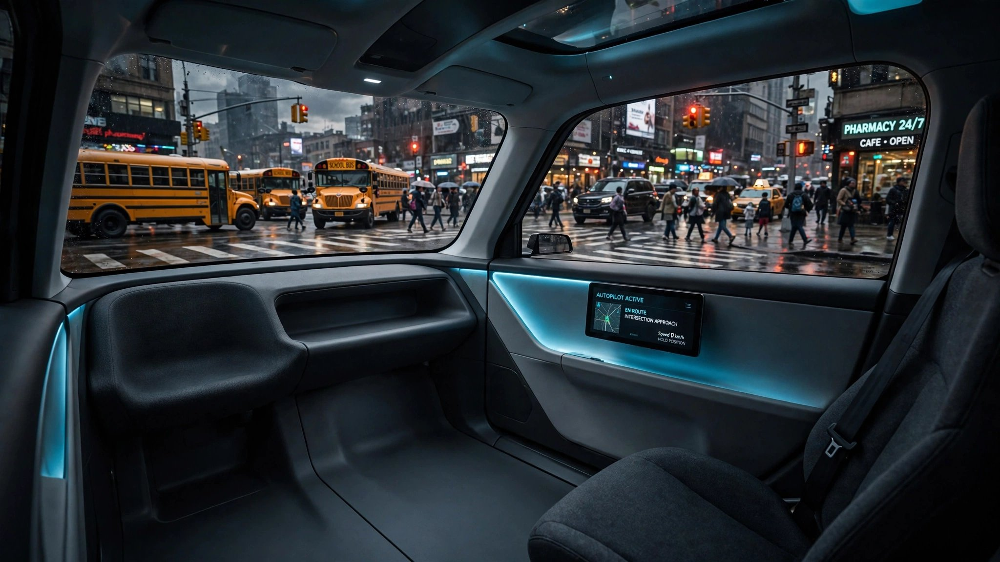

NHTSA Wants to Remove the Brake Pedal. The Software Replacing It Has Been Recalled Five Times.
On June 26, NHTSA proposed eliminating the brake pedal from vehicles designed exclusively for autonomous driving.[1] No steering wheel, no emergency brake lever, no foot pedal. Braking would be entirely handled by software. If that software fails, NHTSA says the vehicle should offer passengers "a means to direct" it to stop, but how that works would vary by manufacturer, with no standard, no requirement, and no enforcement mechanism behind the expectation.[2]
The proposal landed the same week NHTSA closed two Tesla investigations covering more than a million vehicles, one for unexpected deceleration, another for loss of steering control, both dismissed as low-hazard.[7] Meanwhile, Tesla began testing its pedalless Cybercab on public roads in Austin.[5] Both the regulatory green light and the road test arrived within days of each other.
Five recalls in 28 months
Waymo operates the largest commercial robotaxi fleet in the country: 3,791 vehicles across six cities, delivering half a million rides a week. It is also the most prolific source of ADS software recalls in NHTSA's database. Five voluntary software recalls since February 2024, each for a failure mode that a human driver would have handled without incident.
February 2024: two robotaxis hit the same towed pickup truck within minutes of each other because the software misjudged how a towed vehicle would move, and all 444 vehicles were recalled. June 2024: a Jaguar I-Pace collided with a telephone pole. May 2025: sixteen collisions with gates, chains, and barriers over a two-year period prompted a recall of 1,212 vehicles. NHTSA described the incidents as "collisions with clearly visible objects that a competent driver would be expected to avoid."[3]
December 2025 was worse. Three thousand sixty-seven vehicles were recalled after robotaxis illegally passed stopped school buses in Austin and Atlanta. At least 19 documented incidents in Austin alone. In one case, a Waymo vehicle proceeded moments after a student had crossed directly in front of it.[4]
May 2026 was the most revealing failure. A Waymo robotaxi in San Antonio drove into standing floodwater on a 40 mph road and got stuck, prompting a recall of all 3,791 vehicles running fifth- and sixth-generation software, plus service suspensions in four cities.[8] Most drivers learn to avoid standing water in their first rainstorm.
The emergency stop that varies by manufacturer
NHTSA's proposal acknowledges passengers will need some way to stop an autonomous vehicle. It does not say what that mechanism should look like. It also wrote that requiring manual driving controls "could pose as a safety risk through intentional or unintentional misuse by a vehicle passenger." In place of a standard, it offers a sentence of hope: the stop mechanism "would likely vary by manufacturer."
That means one robotaxi might have a red button, another might use a touchscreen, a third might rely on a voice command, and a fourth might offer nothing at all, because the proposal does not actually require any mechanism. It only states NHTSA's "expectation." First responders arriving at a crash scene will need to figure out each manufacturer's system on the spot, possibly while the vehicle is still moving.
Verify first, then trust
NHTSA Administrator Jonathon Morrison has framed the policy as pragmatic, telling the agency's AV Safety Forum in March that "a vehicle designed never to be operated by a human doesn't get safer because it has a foot pedal."[10] Logically sound in a vacuum, but applied to the current fleet, it requires ignoring everything that fleet has actually done.
A January 2026 incident in Santa Monica, in which a Waymo vehicle struck a child in a crosswalk, drew investigations from both NHTSA and the National Transportation Safety Board, investigations that remain open today. Meanwhile, the San Antonio flood incident happened after a recall was supposed to fix flood-related behavior: software caused the problem, software was deployed as the fix, and software failed again when a vehicle drove into standing water despite the patch.
Across the broader auto industry, software reliability is not improving at the pace regulation assumes. Ford has issued 51 recalls in the first six months of 2026, more than every other manufacturer combined, and says 80 percent are "resolved through convenient, software-only updates."[9] Framing software failure as routine maintenance does not inspire confidence that the code shipped ready.
The strongest case for removing the pedal
Fairness requires acknowledging it: Waymo's own data shows its per-mile injury rate is lower than the human-driver average. If the software is genuinely safer over millions of miles, designing around a passenger override has its own risks. An untrained person slamming a brake pedal mid-ride could cause the crash the software would have avoided. That logic is not unreasonable. But it depends on the software being better than the passenger in every edge case, and the recall record suggests it is not there yet, because gates, school buses, telephone poles, and flooded roads are not edge cases but rather the ordinary scenery of an American commute.
Caveats matter here. The 1,790 Waymo crash figure, compiled from NHTSA Standing General Order filings, includes all reported incidents regardless of severity or fault, from fender benders to third-party-caused collisions and everything in between.[3] "Recall" in the AV context typically means an over-the-air software update deployed fleet-wide within days, not the traditional dealer recall where completion rates hover around 50 percent after a year. And the proposal applies only to vehicles designed exclusively for autonomous operation, not to consumer cars with optional driving automation. None of this invalidates the pattern, but it shapes how alarmed you should be.
What to do before you get in
If you ride in a robotaxi, locate the emergency stop mechanism before the vehicle moves. Ask the operator how to halt the vehicle and what happens if the system does not respond. Do not assume a standard exists, because one does not.
If you are a first responder, understand that every ADS manufacturer has a different shutdown procedure with no universal kill switch, and NHTSA has not proposed one.
If you are a parent in Austin, your child's school bus stop is now shared with a fleet of vehicles whose software was recalled six months ago for passing stopped school buses, and Waymo says the fix is deployed, just as the flood fix was also deployed before it failed in San Antonio.
If you share the road with a pedalless Tesla Cybercab, know that its software is being tested in real time, with no steering wheel and no pedals, and only a safety monitor in the passenger seat whose ability to stop the vehicle is not public information.
Sources & References
- Reuters, “US proposes to drop brake pedal requirements for self-driving vehicles,” June 26, 2026. reuters.com
- Jalopnik, “NHTSA’s Plan For Autonomous Car Brakes Will Turn Us All Into Nervous Passengers,” June 30, 2026. jalopnik.com
- NHTSA Standing General Order 2021-01, crash reporting data for ADS-equipped vehicles, July 2021–present. nhtsa.gov
- Reuters, “Waymo recalls, updates software for over 3,000 vehicles,” Dec. 2025. reuters.com
- TechCrunch, “Tesla starts testing Cybercab without pedals or a steering wheel in Austin,” July 1, 2026. techcrunch.com
- Witherite Law Group / Morningstar, Waymo crash and recall data compilation, June 30, 2026. morningstar.com
- Reuters, “U.S. closes 2022 probe into 695,000 Tesla vehicles over unexpected braking,” July 2, 2026. reuters.com
- The Register, “Waymo recalls 3,800 cars over flooded roads software snafu,” May 2026. theregister.com
- USA Today, “Ford recalls 770K cars. Here’s why it leads among recalls in 2026,” July 1, 2026. usatoday.com
- NHTSA AV Safety Forum, March 2026. Administrator Morrison remarks on FMVSS modernization. nhtsa.gov
Source: NHTSA recall filings, Standing General Order crash data, manufacturer recall notices, and cited news reports. Waymo crash count (1,790) sourced from NHTSA SGO data as compiled by Witherite Law Group. Individual recall details from NHTSA recall database. See methodology for caveats.